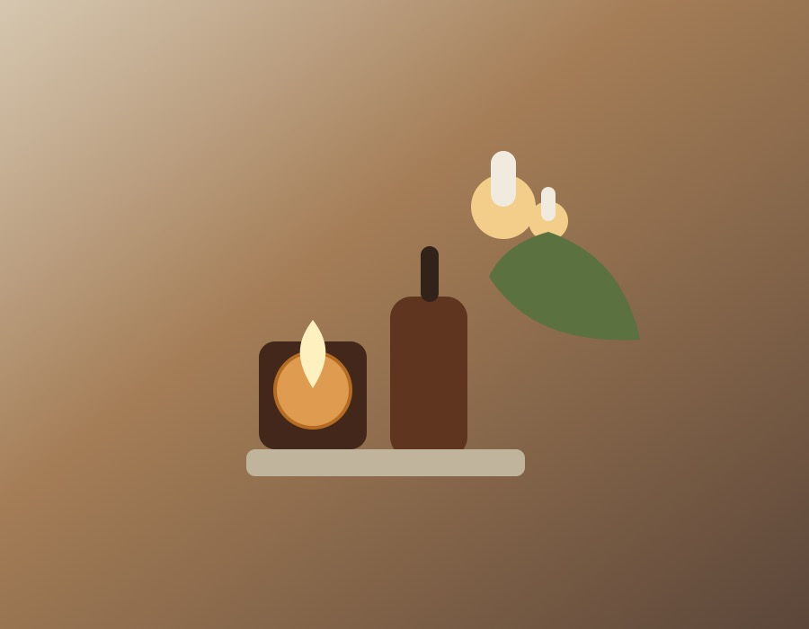

El significado de Lumara
Lumen
Significa luz. Representa claridad, energía y presencia consciente.

Maison Lumara nace de una idea esencial: el bienestar no es solo una pausa, sino una transformación.
El nombre Lumara surge de la unión de dos conceptos profundamente ligados a esta visión. Por un lado, lumen, del latín, que significa luz; por otro, ara, que hace referencia a un altar, un espacio de conexión y recogimiento. Juntos, evocan un lugar donde la luz se convierte en ritual, y donde el cuidado del cuerpo trasciende lo físico para convertirse en una experiencia consciente.
En Maison Lumara entendemos el bienestar como un proceso natural de equilibrio. Cada ritual está diseñado para acompañar al cuerpo y a la mente hacia un estado de calma profunda, respetando su ritmo y escuchando sus necesidades. No se trata únicamente de relajar, sino de transformar: liberar tensiones, restaurar la energía y crear un espacio donde todo vuelve a su centro.
Inspirados en tradiciones ancestrales y reinterpretados con una sensibilidad contemporánea, nuestros rituales combinan técnicas manuales, aceites aromáticos y elementos naturales para ofrecer experiencias que envuelven los sentidos y generan un bienestar duradero.
Maison Lumara es, en esencia, un lugar íntimo donde el tiempo se detiene. Un espacio donde la luz se convierte en calma, y donde cada detalle está pensado para reconectar contigo.
Significa luz. Representa claridad, energía y presencia consciente.
Significa altar. Representa un espacio sagrado de conexión y recogimiento.
